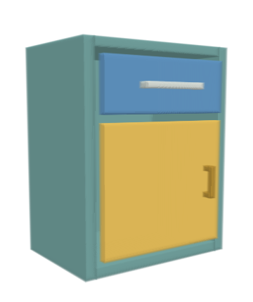
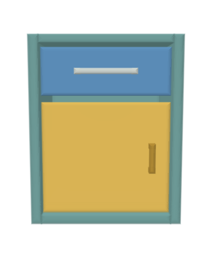
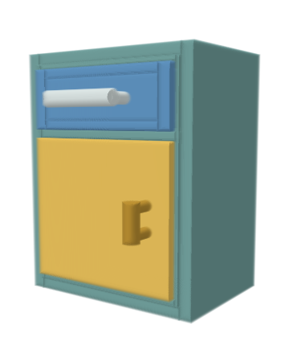
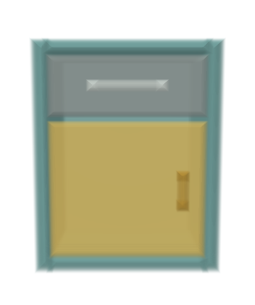
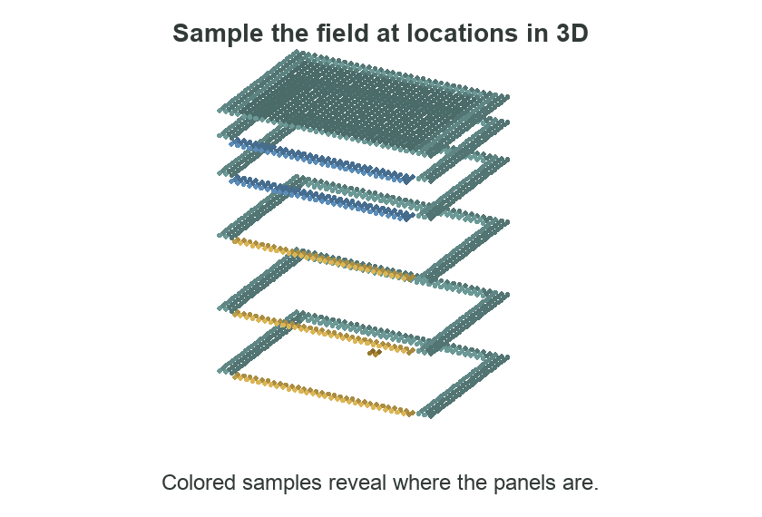
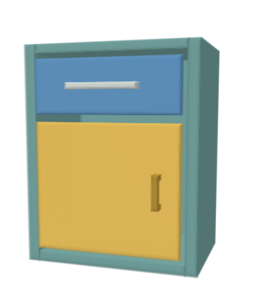

2.9 Radiance fields: reconstruction with NeRF
C. Reconstruction and generation · Neural Radiance Field (NeRF)
First, train: use multiple views of the cabinet and their camera information to train a network representing the cabinet in 3D. Repeatedly render images, compare with the photographs, and update the network.
Then, render: use the saved network and a new virtual camera position and settings to produce another view of the same cabinet. No photograph from that new angle is needed.
2.9.1 Photograph the cabinet
Take overlapping photographs from several positions. Keep the cabinet, drawer, and door still. Each photograph shows the same scene from a different viewpoint.



The original NeRF[1] is trained separately for each scene. Photographs of this cabinet provide the training images: the network learns a description of this particular cabinet from those views.
The three views illustrate the image collection step. Reconstruction may use many more photographs to cover the scene.
2.9.2 Prepare images and camera parameters
The NeRF training pipeline takes the scene’s images and each image’s camera position, orientation, and lens parameters as input. Position specifies where the camera was; orientation specifies which way it pointed. Lens parameters, such as focal length, determine how the scene projects onto the image.

Use the camera estimates from Section 2.7
Section 2.7.3 explains how COLMAP[2] estimates cameras from the cabinet photographs. Section 2.7.5 introduces VGGT’s camera and geometry predictions[3]. Either route must supply camera data in the form expected by the chosen NeRF implementation.
In the workflow illustrated here, COLMAP supplies the camera estimates. Keep each photograph paired with its camera position, orientation, and lens parameters. The original NeRF code describes this preparation.
From prepared cameras to field queries
- 01Prepared inputsCabinet photos + camera parameters
- 02NeRF rendererRays + sampled 3D positions
- 03NeRF networkColor + density per sample
NeRF uses the same photographs and camera estimates through a separate reconstruction route. The 3DGS and NeRF routes branch after input preparation. In NeRF, the renderer calculates the sample positions sent to the network.
Start with a NeRF network whose weights have not yet been fitted to this cabinet. Rendering its current predictions gives images that can be compared with the photographs. Training adjusts the weights to reduce the differences.
NeRF training sequence
- Estimate the cameras. COLMAP processes the cabinet photographs and estimates the camera parameters associated with each image.
- Calculate rays and sample positions. NeRF’s renderer uses the camera parameters to construct a ray through a selected pixel, then samples 3D positions along that ray.
- Query the neural network. Each sample position and its viewing direction enter the network, which predicts a color and density.
- Render and compare. The renderer combines those predictions into a pixel color and compares it with the corresponding pixel in the cabinet photograph.
- Update the network. The training algorithm adjusts the network’s numerical settings, called weights, to reduce the color error. Steps 2–5 repeat across pixels and camera views.
COLMAP supplies camera estimates during data preparation. The repeated training loop updates the NeRF network. The photographs provide target colors; the renderer calculates the positions and directions sent to the network. Section 2.6.2 illustrates the ray and sample positions for one cabinet pixel.
2.9.3 Compare with the photograph, then learn
In this example, the predicted drawer is gray, but the reference image shows blue. Both images use the same camera, so corresponding pixel colors can be compared directly.

The drawer color and edges are wrong.
The reference drawer is blue.
Fit the field to the photographs
- 01Render a prediction.Generate rays, query the network, and combine its answers.
- 02Measure the error.Compare the predicted colors with the corresponding photo pixels.
- 03Adjust the network’s weights.The training algorithm calculates changes intended to reduce that error.
- 04Repeat with more pixels and views.Render again with the updated network and compare again.
Repeat across the photographed camera views, updating the network’s weights.
The photographs provide target pixel colors, without labeling the density at P3 or the drawer’s surface position. Views from other cameras help constrain the 3D arrangement: a misplaced panel might match one view but appear in the wrong place in another.
Rendering and comparison are repeated throughout training. As the network’s weights change to reduce image errors, its 3D description improves. One network is trained to account for the cabinet across the input views. The original training procedure.
2.9.4 Save the trained NeRF and render another view
Training is complete; save the network’s learned weights. These weights are the stored 3D description of this cabinet. To make another picture, load that same network and choose a new virtual camera.
| Stage | Input | Result |
|---|---|---|
| Train the NeRF | Cabinet photographs + their camera parameters | A trained network representing the cabinet in 3D |
| Render a view | The trained network + a chosen virtual camera | A 2D image of the same cabinet from that camera |
One saved scene, many camera views
Render a new view
- 01Saved NeRF + new cameraKeep the learned weights fixed
- 02RenderCalculate rays, query color and density, combine the answers
- 03New 2D viewA picture of the same cabinet
For a right-side view, place the virtual camera on the right and render. For a higher view, move it upward and render again. Every view is calculated directly from the same saved network. Only the camera and the resulting queries change. This uses the rendering calculation in Section 2.6.3.
Rendering a viewpoint absent from the training photographs is called novel-view synthesis. This is a main use of NeRF: showing the same scene from another viewpoint. Camera estimation and network training belong to the earlier reconstruction stage; here, the saved result is ready to render. NeRF project and examples.


Samples on several slices reveal the panels. These dots visualize answers; they are not what a NeRF stores.

The camera moves; the saved 3D representation stays the same.
An unseen back or interior can still be wrong. Good-looking views do not guarantee accurate hidden geometry, moving joints, or mass.
The stored scene differs from 3DGS: 3DGS adjusts a set of blobs; NeRF adjusts a network. Both use rendered images to check a 3D representation against photographs.
References
- Ben Mildenhall, Pratul P. Srinivasan, Matthew Tancik et al. NeRF: Representing Scenes as Neural Radiance Fields for View Synthesis. arXiv preprint arXiv:2003.08934, 2020. arXiv
- Johannes Lutz Schönberger, Jan-Michael Frahm. Structure-from-Motion Revisited. Conference on Computer Vision and Pattern Recognition (CVPR), 2016.
- Jianyuan Wang, Minghao Chen, Nikita Karaev et al. VGGT: Visual Geometry Grounded Transformer. arXiv preprint arXiv:2503.11651, 2025. arXiv